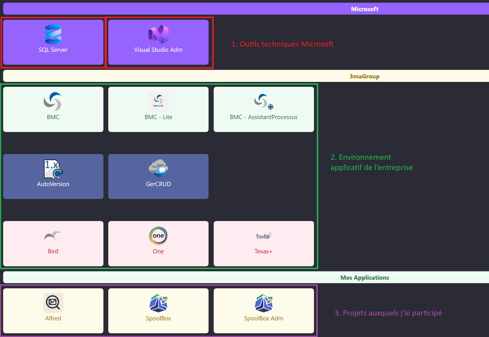
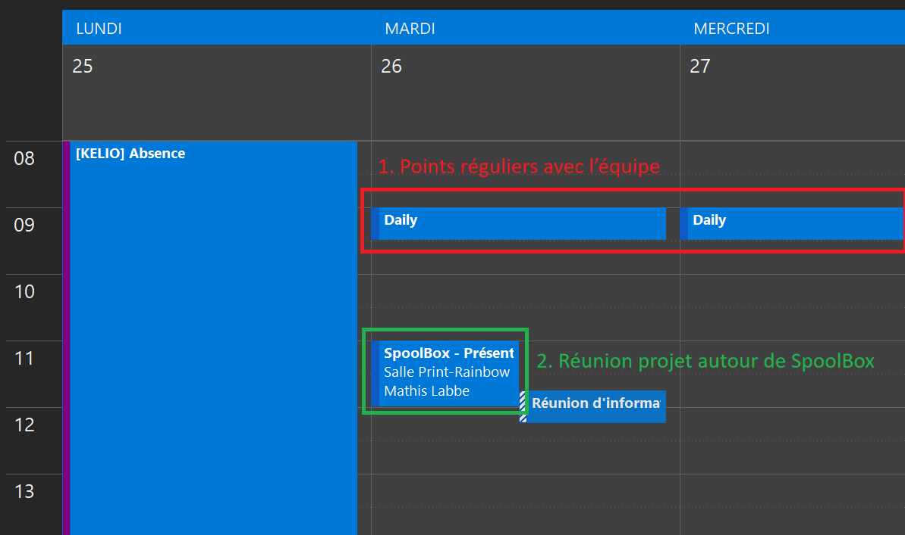
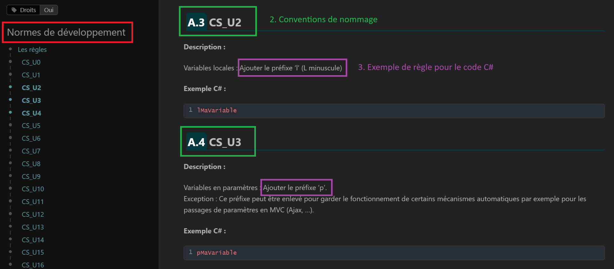

Cette partie montre mon adaptation à l'environnement professionnel de 3maGroup : découverte de
l'équipe, apprentissage des outils, respect des règles internes, communication avec les utilisateurs
et évolution personnelle.
S'adapter à un environnement professionnel
S'intégrer dans un environnement de travailUtiliser des outils professionnelsComprendre l'écosystème applicatif

Trace 7 - Outils et environnement professionnel utilisés chez 3maGroup. Cette capture présente
les outils techniques Microsoft, l'environnement applicatif interne de l'entreprise et les projets
auxquels j'ai participé, comme Alfred et SpoolBox.
La trace 7 présente une partie de l'environnement professionnel dans lequel je travaille
chez 3maGroup. Cette capture regroupe plusieurs applications et outils utilisés dans l'entreprise, ainsi que
les projets auxquels j'ai participé pendant mon alternance.
Cette trace met d'abord en avant le savoir-faire
utiliser des outils professionnels.
Le repère 1 montre des outils techniques Microsoft comme SQL Server
et Visual Studio. Ces outils sont liés au développement, à la gestion des données
et au travail sur des applications internes.
On retrouve aussi le savoir-faire
comprendre l'écosystème applicatif.
Le repère 2 montre plusieurs applications internes utilisées chez 3maGroup, comme
BMC, AutoVersion, GerCRUD, Bird,
One ou encore Texas+. Comprendre le rôle de ces applications m'aide
à mieux situer mes missions dans l'organisation globale de l'entreprise.
Enfin, cette trace illustre le savoir-faire
s'intégrer dans un environnement de travail.
Le repère 3 montre les applications liées à mes missions, notamment
Alfred, SpoolBox et SpoolBox Adm. Ces projets font partie
de mon intégration progressive dans l'équipe Desktop, car ils m'ont permis de travailler sur des outils réels,
utilisés ou destinés à être utilisés dans un contexte professionnel.
Cette trace montre que mon intégration ne s'est pas limitée à l'apprentissage du code. J'ai aussi dû découvrir
les outils de l'entreprise, comprendre les applications existantes et m'adapter au vocabulaire métier. Par rapport
à mes projets scolaires, l'environnement est plus large et plus concret, car mes développements s'inscrivent dans
un ensemble d'applications déjà utilisées par les collaborateurs de 3maGroup.
Participer aux échanges professionnels de l'équipe
Participer aux réunions d'équipeCommuniquer sur son avancementComprendre le contexte métier

Trace 8 - Extrait de planning professionnel montrant les réunions liées à mon alternance chez 3maGroup.
Cette capture met en évidence les points réguliers avec l'équipe et une réunion projet autour de SpoolBox.
La trace 8 présente un extrait de planning professionnel avec plusieurs temps d'échange.
On y retrouve notamment les daily, qui sont des points réguliers avec l'équipe, ainsi
qu'une réunion projet autour de SpoolBox. Ces réunions font partie de l'organisation
quotidienne de mon alternance.
Cette trace met d'abord en avant le savoir-faire
participer aux réunions d'équipe.
Le repère 1 montre les daily, qui permettent de faire le point sur l'avancement du travail.
Ces réunions servent à expliquer ce qui a été fait, ce qui est prévu et les éventuels blocages rencontrés.
On retrouve aussi le savoir-faire
communiquer sur son avancement.
Pendant ces points réguliers, je dois être capable de présenter clairement l'état de mes tâches. Cela m'aide
à mieux organiser mon travail, à rendre mon activité visible pour l'équipe et à demander de l'aide lorsque
je rencontre une difficulté.
Enfin, cette trace illustre le savoir-faire
comprendre le contexte métier.
Le repère 2 montre une réunion projet autour de SpoolBox. Ce type d'échange permet de mieux
comprendre les besoins liés à l'application, les attentes des utilisateurs et les contraintes du service
concerné.
Ces échanges ont joué un rôle important dans mon intégration. Au début de l'alternance, j'étais moins à l'aise
pour expliquer mon travail ou poser des questions. Les réunions régulières m'ont permis de progresser dans ma
communication, de mieux comprendre le fonctionnement de l'équipe Desktop et de m'impliquer davantage dans le
suivi des projets.
Respecter les règles internes de développement
S'adapter aux règles de l'équipeRespecter des conventions de codeProduire un code homogène

Trace 9 - Extrait des normes de développement utilisées chez 3maGroup. Cette capture montre
des conventions de nommage appliquées au code C#, notamment l'utilisation de préfixes pour les
variables locales et les paramètres.
La trace 9 présente une partie des normes de développement utilisées chez 3maGroup.
Ces règles servent à garder un code cohérent entre les différents développeurs de l'équipe. Elles définissent
notamment des conventions de nommage à respecter dans les projets C#.
Cette trace met d'abord en avant le savoir-faire
s'adapter aux règles de l'équipe.
Le repère 1 montre la documentation des normes de développement. En arrivant dans
l'entreprise, j'ai dû apprendre à suivre des règles déjà en place, différentes de mes habitudes de projets
scolaires.
On retrouve aussi le savoir-faire
respecter des conventions de code.
Le repère 2 présente des conventions de nommage, comme les règles CS_U2
et CS_U3. Le repère 3 montre des exemples concrets : une variable locale
doit utiliser le préfixe l, comme lMaVariable, et un paramètre doit utiliser
le préfixe p, comme pMaVariable.
Enfin, cette trace illustre le savoir-faire
produire un code homogène.
Dans un projet professionnel, le code n'est pas écrit uniquement pour soi. Il doit pouvoir être relu, compris
et repris par les autres développeurs. Le respect des conventions permet donc d'améliorer la lisibilité du code
et de faciliter la maintenance des applications.
Cette adaptation a été importante dans mon intégration. Au début, je me concentrais surtout sur le fait de faire
fonctionner le code. En entreprise, j'ai compris qu'il fallait aussi respecter les standards de l'équipe, écrire
un code plus régulier et penser aux personnes qui devront relire ou modifier mon travail par la suite.
Bilan et auto-évaluation de mon intégration
Savoir-faire général : s'adapter à un environnement professionnel
La trace 7 montre mon adaptation à l'environnement professionnel de 3maGroup. Les savoir-faire associés sont
s'intégrer dans un environnement de travail,
utiliser des outils professionnels et
comprendre l'écosystème applicatif.
Dans le contexte de mon alternance, j'ai dû découvrir plusieurs outils et applications internes, comme
SQL Server, Visual Studio, BMC, Alfred
ou encore SpoolBox. Ces outils ne sont pas isolés : ils font partie d'un environnement
applicatif plus large, utilisé par différents services de l'entreprise.
Ce savoir-faire a surtout été appris en entreprise. En cours, les projets sont souvent plus simples et limités
à quelques outils. Chez 3maGroup, j'ai dû comprendre un écosystème existant, avec des applications déjà en place,
des usages métier et des contraintes réelles.
La principale difficulté a été de me repérer dans un environnement nouveau. Au début, je connaissais peu les
applications internes, le vocabulaire métier et les habitudes de travail de l'équipe. Progressivement, j'ai appris
à identifier le rôle des outils et à comprendre où mes missions s'intégraient dans l'organisation.
Mon niveau est intermédiaire en progression. Je suis aujourd'hui plus à l'aise avec les outils
utilisés dans l'équipe Desktop et je comprends mieux l'environnement de travail. Je dois encore progresser dans
ma capacité à faire le lien rapidement entre une application, son usage métier et les besoins des utilisateurs.
Savoir-faire général : communiquer dans une équipe projet
La trace 8 montre ma participation aux échanges professionnels de l'équipe. Les savoir-faire associés sont
participer aux réunions d'équipe,
communiquer sur son avancement et
comprendre le contexte métier.
Dans l'équipe Desktop, les réunions et les points réguliers permettent de suivre l'avancement du travail.
Les daily servent à expliquer ce qui a été fait, ce qui est prévu et les éventuels blocages. Les réunions autour
de SpoolBox permettent aussi de mieux comprendre les besoins liés à l'application et les attentes des utilisateurs.
Ce savoir-faire est important car le développement en entreprise ne se limite pas à produire du code. Il faut aussi
être capable d'expliquer son travail, de poser des questions, de demander de l'aide et de comprendre les contraintes
des personnes qui utiliseront l'application.
Au début de l'alternance, j'étais moins à l'aise pour prendre la parole ou valoriser ce que j'avais fait. J'avais
aussi tendance à voir d'abord les difficultés plutôt que l'avancement réalisé. Les échanges réguliers m'ont aidé
à mieux structurer mes retours et à rendre mon travail plus visible pour l'équipe.
Mon niveau est correct mais encore perfectible. Je participe mieux aux échanges et je comprends
davantage l'intérêt de communiquer sur mon avancement. Je dois encore progresser en aisance orale, en proactivité
et dans ma capacité à présenter positivement mon travail.
Savoir-faire général : respecter les méthodes et standards de l'entreprise
La trace 9 montre les normes de développement utilisées chez 3maGroup. Les savoir-faire associés sont
s'adapter aux règles de l'équipe,
respecter des conventions de code et
produire un code homogène.
Dans un projet professionnel, le code doit pouvoir être lu, compris et modifié par d'autres développeurs.
Les règles internes, comme les conventions de nommage en C#, permettent de garder une cohérence entre les
différents projets et de faciliter la maintenance des applications.
Ce savoir-faire a été appris progressivement en travaillant sur des projets réels. En entreprise, j'ai compris que la qualité du code passe aussi par
le respect des standards de l'équipe, la lisibilité et la capacité à s'intégrer dans un projet existant.
La difficulté principale a été de changer certaines habitudes. Les règles de nommage, les préfixes de variables
et les conventions internes demandent de faire attention à des détails qui ne sont pas toujours présents dans les
projets scolaires. Cela m'a obligé à être plus rigoureux dans ma manière d'écrire du code.
Mon niveau est en progression. Je comprends maintenant mieux pourquoi ces règles existent et
pourquoi elles sont importantes dans une équipe. Je dois encore gagner en automatisme pour les appliquer dès le
début d'un développement.